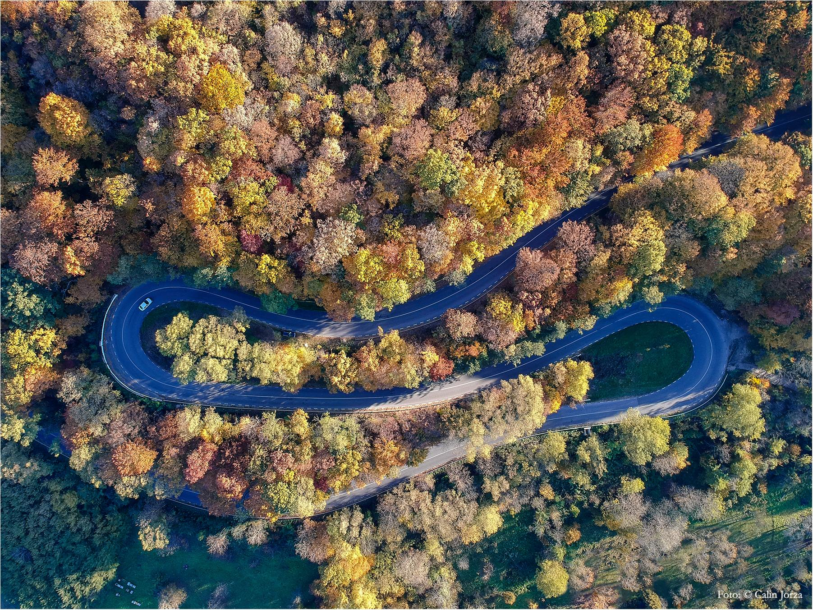

Istoria Statiunii Geoagiu Bai
În anul 1986 au început cercetările sistematice arheologice în perimetrul sitului Complexului termal antic din centrul stațiunii Geoagiu-Băi, aceste cercetări au identificat un complex termal unicat în lume prin modul de organizare și amenajare al bazinelor, precum și al inventarului mobil descoperit aici. În straturi succesive, se poate observa cum izvorul termal a fost folosit de către geto-daci chiar înainte de cucerirea romană. Romanii au mărit bazinul și au captat apa printr-o rețea de tuburi din teracotă, ca să o folosească în scăldători. Săpăturile arheologice au scos la iveală mai multe plăcute votive din aur cu inscripții de mulțumire pentru vindecările miraculoase datorate apelor termale.
Complexul cu izvoare termale Germisara a fost părăsit după retragerea romanilor din Dacia, iar până în Evul Mediu nu mai există informaţii documentare despre el. Abia la mijlocul secolului al XVI-lea, un document arăta că Ioan Sigismund Zápolya, regele Ungariei, a amenajat aici un loc de baie curativă pe care îl folosea adeseori. Staţiunea înfiinţată peste ruinele SPA-ului antic de la Germisara s-a dezvoltat la începutul secolului trecut. În deceniile următoare, noile construcţii au acoperit, potrivit arheologilor, o parte însemnată din teritoriul vechii aşezări. Izvoarele termale care ajungeau în trecut şi în bazinul natural au fost captate şi folosite la alte bazine. La sfârşitul anilor 1980, fundul craterului a fost reamenajat şi transformat într-o piscină construită din beton, care nu are însă nimic în comun cu înfăţişarea arhaică a bazinului.
P.S Statiunea Geoagiu-Băi este construita pe o placa tectonica ce masoara cca. 40km2. In anul 2013-2014 aprox. au avut loc sapaturi in Padurea de Brazi, undeva la 15km de strand. Dupa o zi de sapaturi esuata in care au pierdut mai bine de 2 sonde "in pamant" au introdus o camera video si au descoperit minunata pestera cu apa termala si multe obiecte dacice, aur, argint si multe altele. Conform unui localnic salvamar de mai bine de 20 de ani, ar exista o trapa/usa de intrare in pestera chiar din strand, dar nu dezvaluie nimic, deoarece ar risca inchiderea statiunii, pierderea a 10 de locuri de munca si o zona turistica frumoasa. Avand in vedere ca Grota Haiducilor a fost ascunsa de pamant, iar in urma constructiilor si sapaturilor efectuate au descoperit baile romane putem sa fim siguri de existenta pesterii sub statiune.